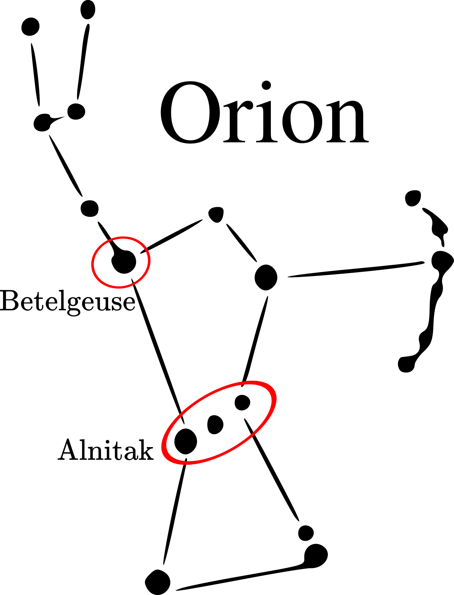
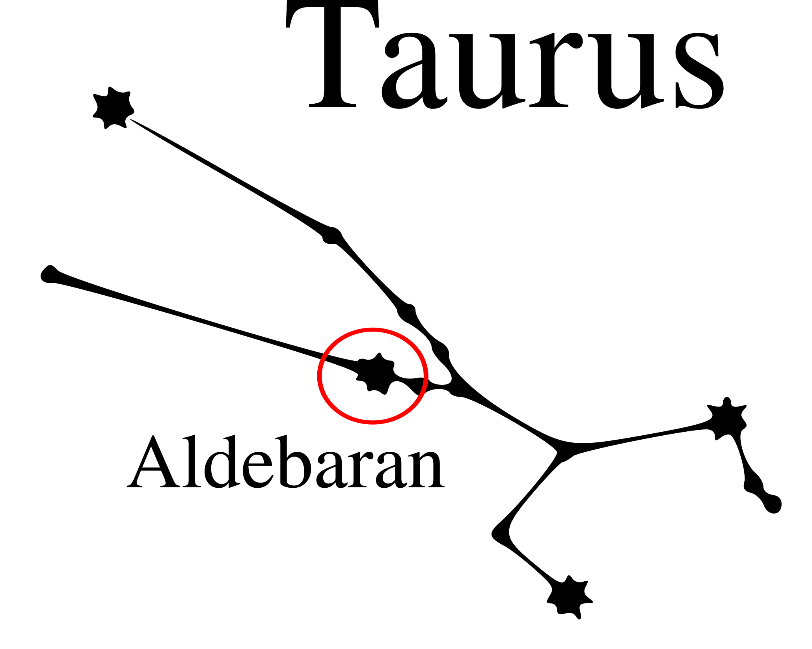

Last updated January 20th, 2020.
Referenced works: Britannica and Columbia Encyclopaedias; TTS software; Wikipedia.
Betelgeuse, Alnitak, and Aldebaran
A short informational article about three Arabian stars from the Orion and Taurus constellations
By the Author
Table of Contents
- Section 1: Orion
- Section 1.1: Betelgeuse
- Section 1.2: Alnitak
- Section 2: Taurus
- Section 2.1: Taurus

Betelgeuse
Betelgeuse (pronounced in America as if it were written "beetle juice," and in other English countries as "betel-JUZ") is a very bright variable star visible in our night sky.
Its name "Betelgeuse" is a derivation (Latinization) of its original Arabic name, Ibt al-Jauzā, meaning "The Armpit of Orion."
Ibt al-Jauzā
Details
- Right Ascension: about 4h 35m 55s.
- Declination: about +16° 30' 33".
- Absolute / Apparent Magnitude: -6 / 0.0-1.3
Nomenclature
Recent News

Betelgeuse is a variable star: its magnitude ranges from 0 to about 1.3 within a specific interval of time. However, since late 2019, Betelgeuse has been dimming far lower than ever recorded before. The diagram above, from an article pubished on New York Times, shows the recent decrease in the magnitude of the red giant. Astronomers speculate that this dimming is a sign that the star is reaching its last stage in its evolution. See stellar evolution on Wikipedia.
The magnitude of a star, put simply, is a numerical measure of its brightness. Positives mean dim, negatives mean low: a 1 is dimmer than a -1, a -1 is dimmer than a -2, and so on. Apparent magnitude is a measure of how bright a star is as it appears in the sky on Earth. Absolute magnitude, on the other hand, is distance-adjusted.
Alnitak
{kind=link}
Alnitak is part of the three stars in Orion's Belt. In Arabic, Alnitak (pronounced an-Nitāq) translates to "The Girdle," or "The Belt," probably because it is a part of the Belt.
an-Nitāq.
Details
- Right Ascension: 5h 40m 45s
- Declination: -01° 56' 34"
- Absolute / Apparent Magnitude: -5.26 / 1.77
Nomenclature
In addition to its Arabic name an-Nitaq, the Wikipedia lists a few more Arabic terms for the star.
slightly modified from its Wikipedia page.
Note on Pronunciations
In Arabic, when certain letters follow an article like Al, you do not literally say Al and then Nitaq, as the (slightly) Latinized name would suggest, but in that case you would pronounce the Al as if it were An, because an N follows the Al. So, AN-Nitaq. The same ruling applies, of course, to other Arabic stars with the same conditions. Alnilam becomes an-Nilam, and so on. This does not apply to names like Ibt Al-Jauza, where the Al and the J would not join sounds, and the same for M.
If I am mistaken, you may email me corrections with the button on the sidebar.

Aldebaran
Aldebaran is a bright star in the Taurus constellation, often depicted as a bull. Unsurprisingly, Taurus is Latin for 'bull.' The name Aldebaran is Arabic for "The Follower."
Details
- Right Ascension: 4h 35m 55s
- Declination: +16° 30' 33"
- Absolute / Apparent Magnitude: about -0.641 / -2.095
Aldebaran compared to our Sun. Image from its Wikipedia page.
{kind=link}
Concluding Thoughts
The influnce of ancient and middle-age Arabian and Middle Eastern astronomy on the West is significant and also undeniable. In our numbers, our stars, and even some of the foundations of our medical knowledge, we see great patches of Arabic, Middle Eastern and Islamic influence.